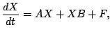
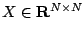
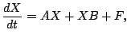
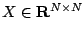
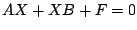
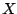
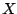

|  with
 |
We will discuss a multigrid solver for the numerical solution of the time-dependent Sylvester equation
|  with
 |
Our
multigrid solver is built on a recently developed algorithm
for the stationary Sylvester equation [1]
.
We exploit the fact that the iterates can be well compressed
when the right hand side  has a low-rank structure. If
this compression is used throughout the multigrid cycle, a
significant reduction in time and memory can be achieved for
large scale problems. This is accomplished by approximating
the unknown  by a low-rank matrix
has a low-rank structure. If
this compression is used throughout the multigrid cycle, a
significant reduction in time and memory can be achieved for
large scale problems. This is accomplished by approximating
the unknown  by a low-rank matrix
[1] L. Grasedyck, W. Hackbusch, A Multigrid Method to Solve Large Scale Sylvester Equations, Technical Report 48 (2004), Max Planck Institute for Mathematics in the Sciences.